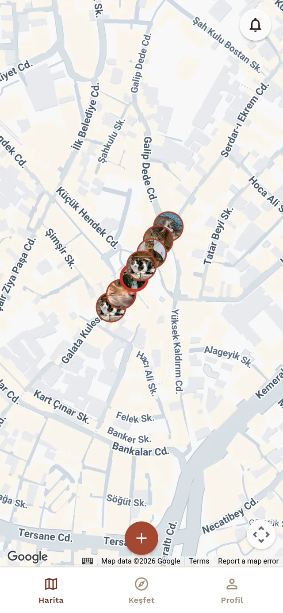
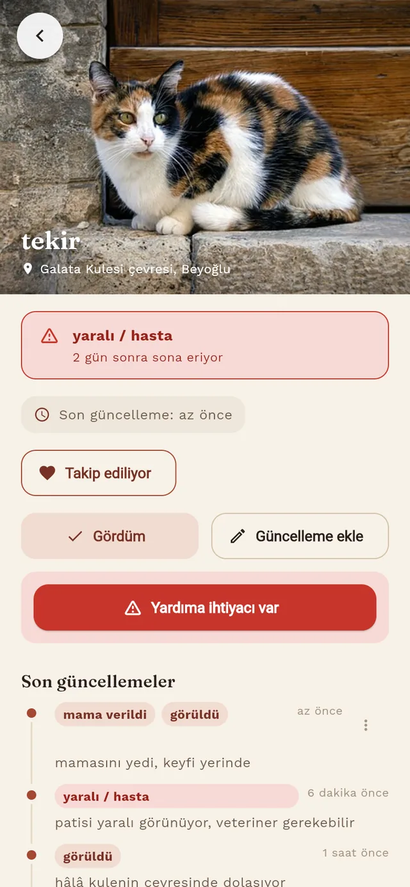
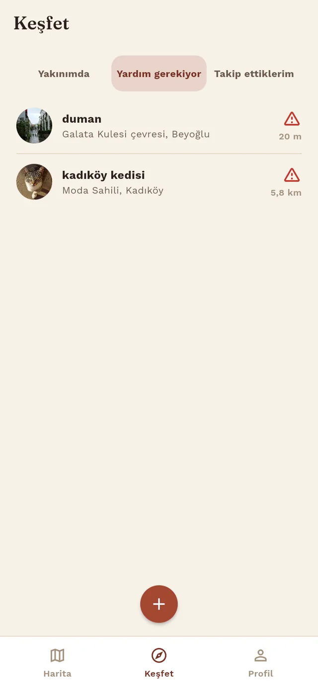

A map for finding, following, and helping Istanbul's street cats.
See nearby street cats on the map, check their latest status and needs, and add an update when you pass by — so what a cat needs doesn't live only in one person's memory.
Tekir 0.3 is live on the web — iOS submission is in progress, Android is next.
the app, as shipped
Real screenshots from the app — not mockups.



how it works
- See nearby street cats on the map.
- Check a cat's latest status and needs.
- Follow a cat and contribute an update when you see it.
Tekir is a shared, current picture of where a cat usually is and how it's doing, kept up to date by whoever's nearby. It's open source and currently focused on Istanbul.
open source & contact
The API, the database schema, and the app are all public, and changes land through regular pull requests: github.com/tekiristanbul/tekir
Feedback and questions: hello@tekir.istanbul